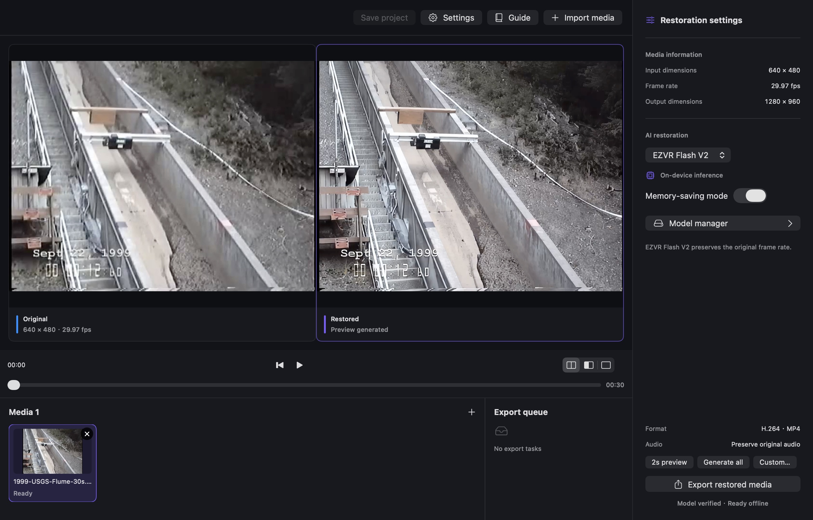
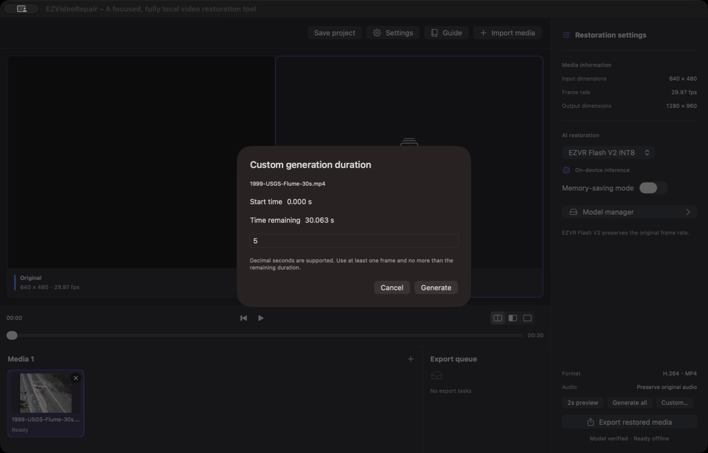
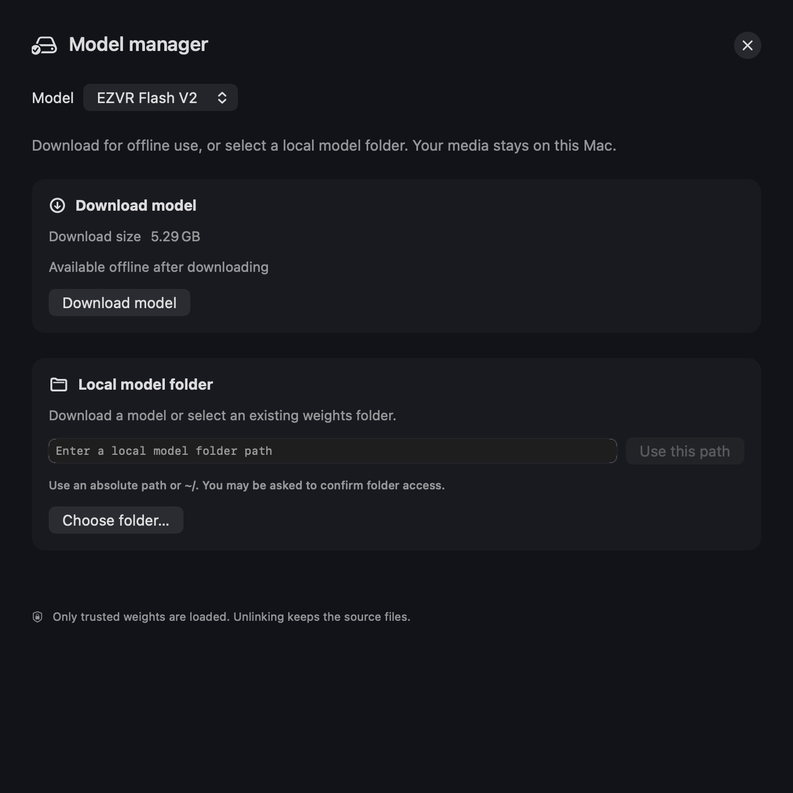

Preview before you commit
Generate a two-second preview from the selected time. Check it before processing the whole video.
Pick two seconds of footage to see how the details look before restoring a longer clip. You can restore individual photos on your Mac, too.
Version 0.0.5 (build 6). For Apple Silicon Macs running macOS 14 or later. Open the DMG and drag EZVideoRepair into Applications.

Follow the steps in English to import the footage, select the first five seconds and play the result. The wait is shortened. The final comparison plays the 640 × 480 original alongside the 1280 × 960 restoration.
This video could not be played on this page. Open the MP4 file
The USGS filmed water flowing over an eroded sediment bed in its experimental flume on September 22, 1999. View the original USGS record
Watch the demo in Chinese, English, Spanish and French (MP4)
This video could not be played on this page. Open the MP4 file
Filmed by Aviceda as Albert’s Lyrebird OR. We took the excerpt from 00:07 to 00:37, removed the audio and converted it to MP4. The original, this excerpt, the four restorations and the poster images are all licensed under CC BY-SA 3.0.
Open a screenshot at full size. The workbench and duration dialog are from the English walkthrough of the flume experiment.



Videos and photos are processed on your Mac. Once setup is complete, you can work offline.
Less distraction, more focus
A clear path from import to preview to export, without turning a simple restoration task into a complicated workspace.
Generate a two-second preview from the selected time. Check it before processing the whole video.
Restore a full video or set a custom duration. Work on just the part you need.
Preview a section of a landscape or portrait video, or open a single photo to inspect the restored details.
Reopen a saved project to find your settings and finished results where you left them.
Matching media and settings reuse completed results, reducing unnecessary processing.
Setup files download in the background. Check their progress, pause the download, or resume it later.
From footage to results
Open the DMG and drag EZVideoRepair into Applications. Launch the app and follow the setup prompts.
Import your media, choose a start time, and inspect a two-second preview.
Choose a full video or a custom duration, export the result, or save a project to continue later.
No. Your Mac processes your videos and photos locally. Initial setup may need an internet connection to download files.
Restoration currently supports Apple Silicon Macs only. Intel Macs and Windows are not supported.
It depends on your Mac, the media and its duration. Processing may take much longer than playback. Start with a two-second preview to decide how much to process.
Yes. A project keeps your settings and restored results, and refers back to the original media. Copy both the project and the originals to your new Mac.
Both INT8 and BF16 variants of V1 and V2 can load weights from SSD one layer at a time. V1 needs a compatible inference profile. In one test on an M4 Pro Mac with 24 GB of memory, restoring a 30-second video with V2 INT8 used 8.96 GB at peak, down from 12.13 GB. Processing took 379 seconds instead of 366. The mode is off by default.
V1 removes the padding it adds and keeps any black bars in the original. With the 512×512 square profile, it can restore larger photos and videos in overlapping tiles. V2 uses tiles for videos that exceed its whole-frame limit. Tiled frames can be up to 4,096 pixels per side and 9,437,184 pixels in total.
Download for Mac (DMG) Open the DMG and drag EZVideoRepair into Applications. Download the previous version (0.0.4).
From preview to export, your Mac processes your videos and photos without uploading them. You decide whether to share the results.
Download for Mac (DMG)